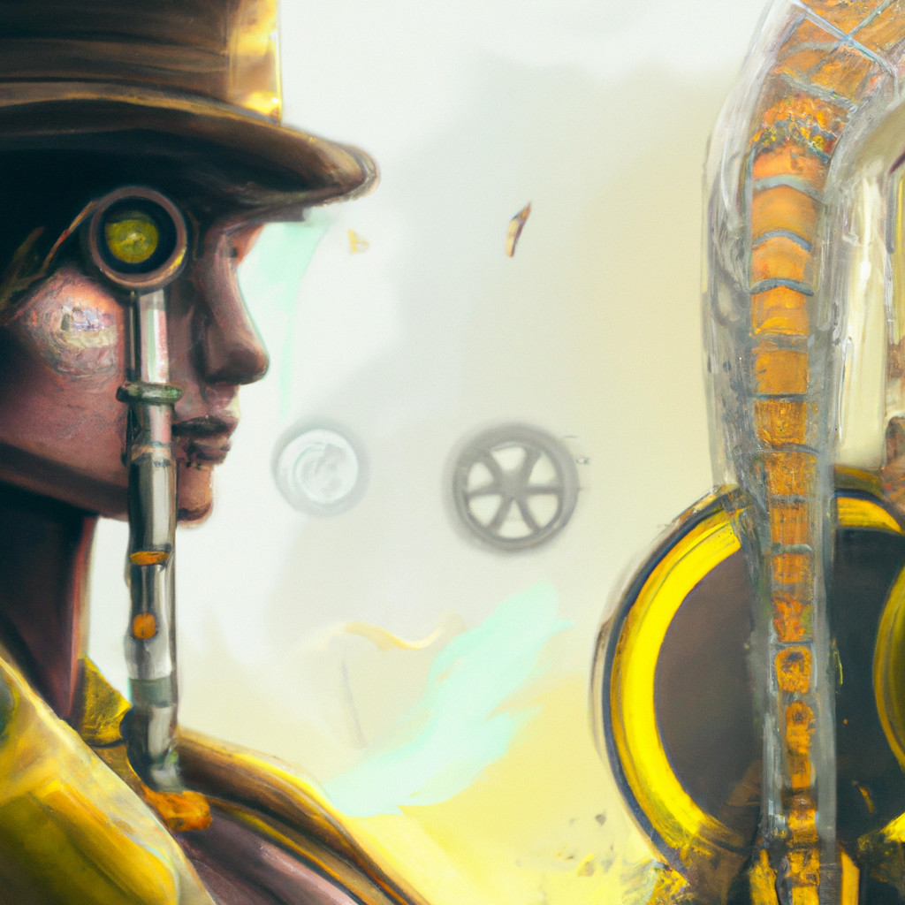

The Future of Python and AI
Python and artificial intelligence (AI) are two of the most exciting and rapidly evolving technologies of today. As a software developer, I find myself drawn to both of these disciplines as they offer many opportunities to innovate and create solutions to problems. Python is an incredibly versatile language that can be used for a variety of applications, from web development to machine learning. AI, on the other hand, is an ever-growing field that has the potential to revolutionize the way we approach problem-solving. In this blog, I will discuss the potential of Python and AI in the near future and the implications they may have for the software development industry.
Python is already being used in a variety of applications, ranging from web development to machine learning. As the language continues to evolve, there are sure to be more applications that take advantage of its potential. One of the most exciting uses of Python is in the field of machine learning. Machine learning is a form of artificial intelligence that uses algorithms and statistical models to identify patterns in data and to make predictions. This technology is already being used in a variety of applications such as image recognition, natural language processing, and autonomous vehicles. As the technology continues to develop, the possibilities for Python and AI become even more exciting.
In the near future, Python and AI could be used to create entirely new applications and solutions that were previously impossible. For example, AI could be used to automate processes and make decisions based on large amounts of data. This could make it easier for software developers to create powerful applications that are able to process large amounts of data in order to make decisions and predictions. In addition, Python could be used to develop applications that are more intelligent and responsive to user input. This could lead to more user-friendly applications that are able to adapt to changing user needs.
The potential of Python and AI is immense and the possibilities are endless. As the technology continues to evolve, it could have a major impact on the software development industry. It could enable developers to create more powerful applications that are able to take advantage of large amounts of data and to make decisions faster and more accurately. This could revolutionize the way software is developed and used.
The future of Python and AI looks very exciting and I look forward to seeing the incredible applications that can be created with these technologies. I believe that they have the potential to revolutionize the way software is developed and used and I am excited to see how they will be used in the coming years.